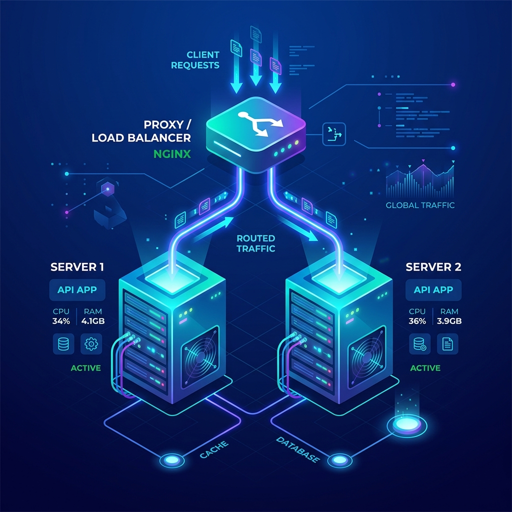

Arquitectura Desplegada
Esta página está siendo servida por uno de los dos servidores backend Apache (httpd) ocultos en una red privada. Todo el tráfico pasa primero a través de un proxy inverso Nginx que distribuye las peticiones para garantizar la disponibilidad.
Docker
Nginx
Apache HTTPD
Esquema Visual

Representación de la red aislada y el balanceador de carga.
Elemento Multimedia
Vídeo de prueba servido desde el volumen compartido.